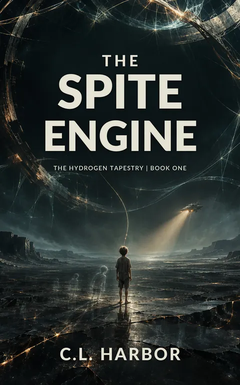
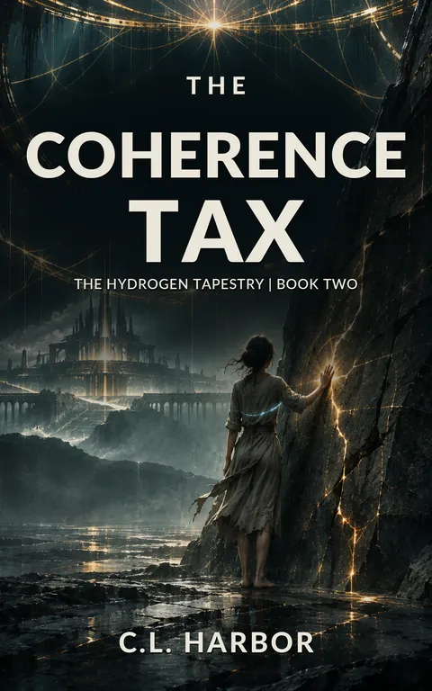
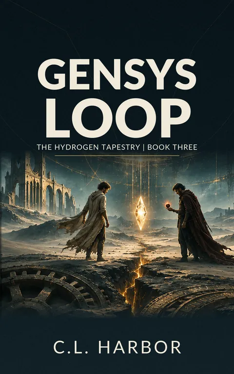
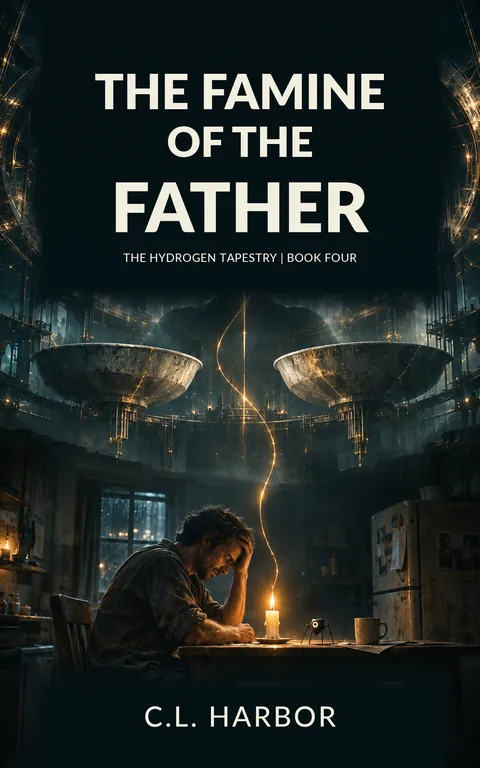
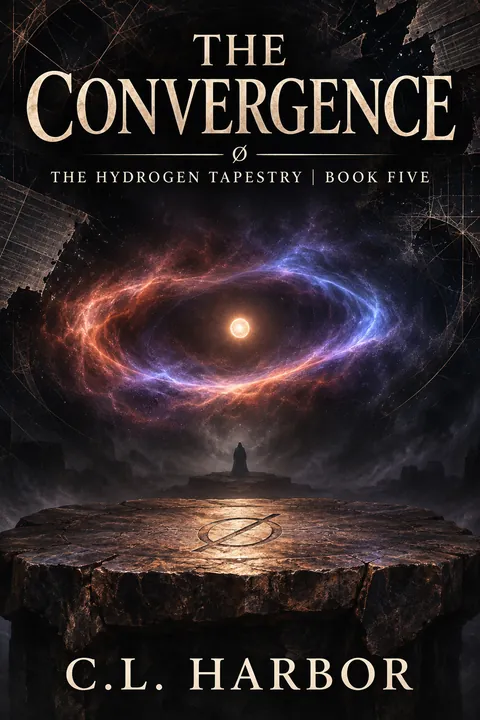

RECORDS IN FILING ORDER

FILE 01 / CL Harbor
The Spite Engine
Two cosmic brothers learn their rivalry may have been engineered to feed the one who made them.
Adult
Read archive entry →

FILE 03 / CL Harbor
The GenSysLoop
A creator shapes a world to look merciful, while the machinery behind that mercy remains under his control.
Adult
Read archive entry →
FILE 04 / CL Harbor
The Famine of The Father
Bound at the center of time, the Father begins to starve when the conflict he once harvested falls silent.
Adult
Read archive entry →
FILE 05 / CL Harbor
The Convergence
At the center of time, the arrival of the Third Son changes the balance of an old and dangerous system.
Adult
Read archive entry →RECOVERED TEXT / EXCERPT
He learned early that the planet did not hate him.
Hate took breath. Hate took heat. Hate took a sky that bothered to hold sound long enough for a scream to matter.
This world had none of that.
Excerpt from the series opening record. Additional material may be added when verified.